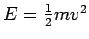

Next: About this document ...
Up: No Title
Previous: Assumptions
Answer the following questions as best you can, and justify your results.
- 1.
- Assuming nothing is done to divert the asteroid,
will the asteroid strike the Earth or the moon?
- 2.
- Assuming nothing is done to divert the asteroid, at what time of day
will the collision occur?
- 3.
- Suppose we build a rocket that can place a warhead on the
asteroid to divert its course two days before the collision. You may
assume that all of the explosive yield, E, is diverted into kinetic
energy,

where m is the mass of the asteroid
and v is the change in velocity of the asteroid. What is the
minimum explosive yield required to save our planetary system? Where
on the asteroid would you place the charge to get the best performance?
- 4.
- Supposing we can build a rocket that can place a warhead on the asteroid
a week before the collision, what would be the minimum required yield?
Where would you place the charge?
Louis F Rossi
2002-02-14